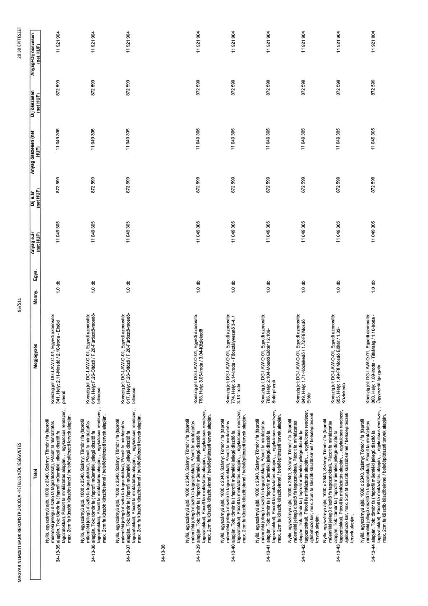

| Tétel | Megjegyzés | Menny. | Egys. | Anyag e.ár (net HUF) | Díj e.ár (net HUF) | Anyag összesen (net HUF) | Díj összesen (net HUF) | Anyag+Díj összesen (net HUF) |
|---|---|---|---|---|---|---|---|---|
| 34-13-35 | Nyíló, egyszárnyú ajtó, 1000 x 2340, Szárny: Tömör / fa (laprofil műemléki jellegű díszítő fa tagozatokkal), Pácolt fa mintázatás alapján, Tok: tömör fa ( laprofil műemléki jellegű díszítő fa tagozatokkal), Pácolt fa mintázatás alapján, , egykulcsos rendszer, max. 2cm fa küszöb küszöbsínnel / belsőépítészeti tervek alapján,; Konszig.jel: DG-LAW-O-01, Egyedi azonosító: 341, Hely: 2.11-Mosdó / 2.10-Iroda - Elnöki pihenő | 1,0 | db | 11 049 305 | 872 599 | 11 049 305 | 872 599 | 11 921 904 |
| 34-13-36 | Nyíló, egyszárnyú ajtó, 1000 x 2340, Szárny: Tömör / fa (laprofil műemléki jellegű díszítő fa tagozatokkal), Pácolt fa mintázatás alapján, Tok: tömör fa ( laprofil műemléki jellegű díszítő fa tagozatokkal), Pácolt fa mintázatás alapján, , egykulcsos rendszer, max. 2cm fa küszöb küszöbsínnel / belsőépítészeti tervek alapján,; Konszig.jel: DG-LAW-O-01, Egyedi azonosító: 616, Hely: F.26-Öltöző / F.28-Füstszűrő-mosó-bölmöső | 1,0 | db | 11 049 305 | 872 599 | 11 049 305 | 872 599 | 11 921 904 |
| 34-13-37 | Nyíló, egyszárnyú ajtó, 1000 x 2340, Szárny: Tömör / fa (laprofil műemléki jellegű díszítő fa tagozatokkal), Pácolt fa mintázatás alapján, Tok: tömör fa ( laprofil műemléki jellegű díszítő fa tagozatokkal), Pácolt fa mintázatás alapján, , egykulcsos rendszer, max. 2cm fa küszöb küszöbsínnel / belsőépítészeti tervek alapján,; Konszig.jel: DG-LAW-O-01, Egyedi azonosító: 617, Hely: F.28-Öltöző / F.28-Füstszűrő-mosó-bölmöső | 1,0 | db | 11 049 305 | 872 599 | 11 049 305 | 872 599 | 11 921 904 |
| 34-13-38 | NaN | NaN | NaN | 0 | 0 | 0 | 0 | 0 |
| 34-13-39 | Nyíló, egyszárnyú ajtó, 1000 x 2340, Szárny: Tömör / fa (laprofil műemléki jellegű díszítő fa tagozatokkal), Pácolt fa mintázatás alapján, Tok: tömör fa ( laprofil műemléki jellegű díszítő fa tagozatokkal), Pácolt fa mintázatás alapján, , egykulcsos rendszer, max. 2cm fa küszöb küszöbsínnel / belsőépítészeti tervek alapján,; Konszig.jel: DG-LAW-O-01, Egyedi azonosító: 768, Hely: 3.05-Iroda / 3.04-Közlekedő | 1,0 | db | 11 049 305 | 872 599 | 11 049 305 | 872 599 | 11 921 904 |
| 34-13-40 | Nyíló, egyszárnyú ajtó, 1000 x 2340, Szárny: Tömör / fa (laprofil műemléki jellegű díszítő fa tagozatokkal), Pácolt fa mintázatás alapján, Tok: tömör fa ( laprofil műemléki jellegű díszítő fa tagozatokkal), Pácolt fa mintázatás alapján, , egykulcsos rendszer, max. 2cm fa küszöb küszöbsínnel / belsőépítészeti tervek alapján,; Konszig.jel: DG-LAW-O-01, Egyedi azonosító: 774, Hely: 3.14-Iroda - Főosztályvezető 3.4. / 3.13-Iroda | 1,0 | db | 11 049 305 | 872 599 | 11 049 305 | 872 599 | 11 921 904 |
| 34-13-41 | Nyíló, egyszárnyú ajtó, 1000 x 2340, Szárny: Tömör / fa (laprofil műemléki jellegű díszítő fa tagozatokkal), Pácolt fa mintázatás alapján, Tok: tömör fa ( laprofil műemléki jellegű díszítő fa tagozatokkal), Pácolt fa mintázatás alapján, , egykulcsos rendszer, max. 2cm fa küszöb küszöbsínnel / belsőépítészeti tervek alapján,; Konszig.jel: DG-LAW-O-01, Egyedi azonosító: 786, Hely: 2.104-Mosdó Előtér / 2.105-Sófipihenő | 1,0 | db | 11 049 305 | 872 599 | 11 049 305 | 872 599 | 11 921 904 |
| 34-13-42 | Nyíló, egyszárnyú ajtó, 1000 x 2340, Szárny: Tömör / fa (laprofil műemléki jellegű díszítő fa tagozatokkal), Pácolt fa mintázatás alapján, Tok: tömör fa ( laprofil műemléki jellegű díszítő fa tagozatokkal), Pácolt fa mintázatás alapján, , egykulcsos rendszer, ajtóbehúzó kar, max. 2cm fa küszöb küszöbsínnel / belsőépítészeti tervek alapján,; Konszig.jel: DG-LAW-O-01, Egyedi azonosító: 849, Hely: 1.71-Közlekedő / 1.72-Ffi Mosdó Előtér | 1,0 | db | 11 049 305 | 872 599 | 11 049 305 | 872 599 | 11 921 904 |
| 34-13-43 | Nyíló, egyszárnyú ajtó, 1000 x 2340, Szárny: Tömör / fa (laprofil műemléki jellegű díszítő fa tagozatokkal), Pácolt fa mintázatás alapján, Tok: tömör fa ( laprofil műemléki jellegű díszítő fa tagozatokkal), Pácolt fa mintázatás alapján, , egykulcsos rendszer, ajtóbehúzó kar, max. 2cm fa küszöb küszöbsínnel / belsőépítészeti tervek alapján,; Konszig.jel: DG-LAW-O-01, Egyedi azonosító: 855, Hely: 1.49-Ffi Mosdó Előtér / 1.32-Közlekedő | 1,0 | db | 11 049 305 | 872 599 | 11 049 305 | 872 599 | 11 921 904 |
| 34-13-44 | Nyíló, egyszárnyú ajtó, 1000 x 2340, Szárny: Tömör / fa (laprofil műemléki jellegű díszítő fa tagozatokkal), Pácolt fa mintázatás alapján, Tok: tömör fa ( laprofil műemléki jellegű díszítő fa tagozatokkal), Pácolt fa mintázatás alapján, , egykulcsos rendszer, max. 2cm fa küszöb küszöbsínnel / belsőépítészeti tervek alapján,; Konszig.jel: DG-LAW-O-01, Egyedi azonosító: 860, Hely: 1.09-Iroda - Titkárság / 1.10-Iroda - Ügyvezető Igazgató | 1,0 | db | 11 049 305 | 872 599 | 11 049 305 | 872 599 | 11 921 904 |
